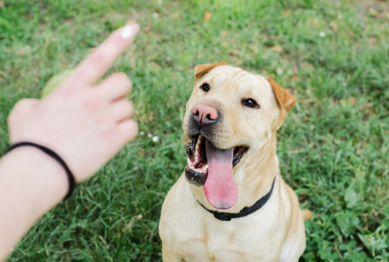

Training Tips for a Happy Pup
Training your dog is one of the most rewarding parts of dog ownership. Consistent, positive reinforcement helps your dog learn expectations and build trust with you.
Basic Commands
- Sit: Hold a treat close to your dog's nose, then move your hand up. As their head follows, their bottom will lower — say "sit" and give the treat.
- Stay: Once sitting, open your palm in front of their face and say "stay." Take a few steps back and reward if they hold position.
- Potty Training: Take them out frequently, especially after eating or waking up. Reward immediately after they go outside.
Building Good Habits
Start training early and be consistent. Use short, fun sessions and reward desired behaviors with praise or treats. Avoid punishment — redirect instead.
Correcting Common Problems
- Chewing: Provide chew toys and redirect them when they chew inappropriate things.
- Barking: Understand the cause — boredom, excitement, or alert — and train with commands like "quiet" with rewards.
- Jumping: Ignore jumping and only give attention when all four paws are on the ground.
Want to dive deeper into dog training techniques? Check this out: ASPCA Training Your Dog or Puppy.
Image source: freepik
